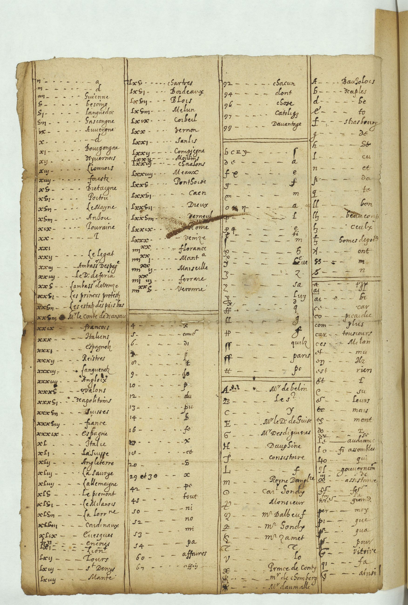
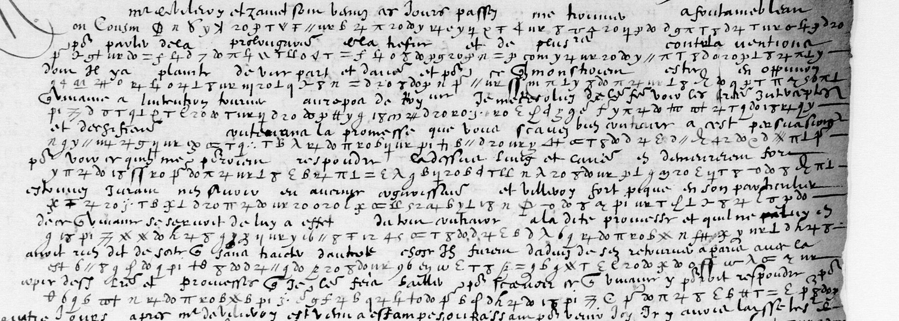
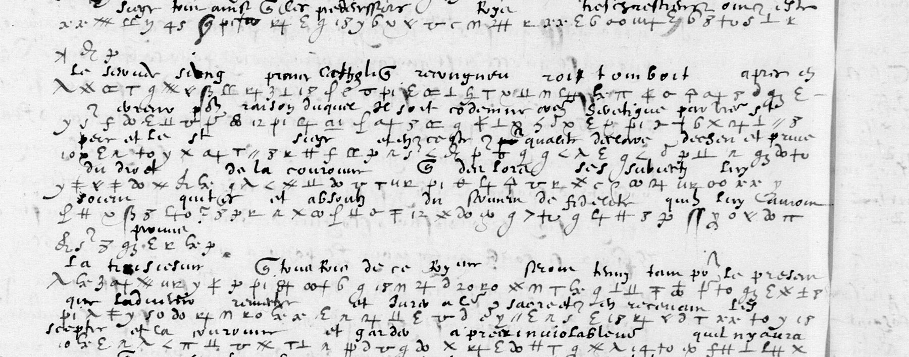
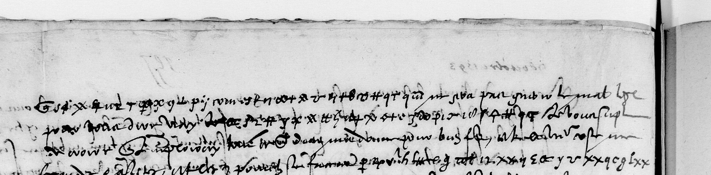

At a glanceKnown key applied, partial · three words of f. 88r
- The letters
- Louis de Gonzague, duc de Nevers, to Louis de Revol, secretary of state, August–October 1593, on his embassy to Rome for Henri IV’s absolution: six passages in cipher inside copies of clear letters.
- Where
- BnF Français 3985 ff. 88, 115, 176 and Français 3986 ff. 146v, 157v, 198, via Gallica; the key in Français 3995 ff. 108–111. Part of catalogue entry 21.
- The cipher
- The Court’s symbol cipher, given to Nevers at Montereau in August 1593: four or five symbols for each letter, a syllabary, Roman numerals for names and places, word signs and nulls.
- How it was tried
- Both key tables transcribed from the images, checked on two pages the office deciphered between the lines, and corrected from a reader’s issue; then applied to the transcribed passages.
- What it says
- On the 21 August letter: … de absolution, le Roy, qu’il. Elsewhere only anchors.
- Still open
- Almost all of it: the copyist’s forms, and three passages not yet transcribed.
- Credit
- Key identified by Satoshi Tomokiyo; corrections and the f. 88 transcription by Robert Węglarek (issue #32).
Nevers’s two letters to the marquis de Pisany of the same autumn are in his numerical cipher no. 46 and have their own page, Nevers to Pisany, 1593: a different cipher, with its own page. The two were written up together until 14 October 2026.
01 The letters
| Item | Date and place | Where the cipher is | State |
|---|---|---|---|
| fr. 3985 | 21 Aug 1593 | f. 88r–v, six lines | transcribed (issue #32); de absolution, le Roy, qu’il on f. 88r |
| fr. 3985 no. 66 | Nevers, 27 Aug 1593 | f. 115, one line; ff. 113–114v are in clear | located, not transcribed |
| fr. 3985 no. 88 (dupl. no. 94) | Nevers, 2 Sept 1593 | f. 176, about ten lines | located, not transcribed |
| fr. 3986 no. 68 | Vese, 7 Oct 1593 | f. 146v, nine lines | transcribed; Tomokiyo’s anchors only |
| fr. 3986 no. 75 | Coire, 9 Oct 1593 | f. 157v, cipher mixed with faded clear | transcribed, extent not yet segmented |
| fr. 3986 no. 101 | Desenzano, 23 Oct 1593 | f. 198, five lines | located, not transcribed |
The places of the cipher come from Tomokiyo’s list of every letter in no. 60 and from the full-resolution pages. Both volumes are microfilm digitisations on Gallica; canvas numbers and routes are in targets/nevers1593/NOTES.md.
02 Key no. 60
The letters to Revol are in the Court’s symbol cipher, Tomokiyo’s no. 60, endorsed “Chiffre baillé à Monsieur de Nevers, Montereau, aoust 1593”. Its
enciphering sheet (fr. 3995 f. 109) gives four or five symbols for each letter, a syllabary ba … vu, word signs, Roman numerals for provinces, towns and
persons (iiijxx for 80), and a row of nulls; Nevers’s secretary added a deciphering table sorted by the shape of the symbols (ff. 110v–111). Both
tables were transcribed from the full-resolution images on 17 September 2026 and are transcribed in key60.txt; the deciphering table is complete and legible,
and it settles the values Tomokiyo found doubtful (the y-shaped sign is s, the closed 4-shaped sign is x, the crossed η is the doubling sign).

03 The cribs in the copyist’s hand
The cursive forms the copyist uses in the letters differ from the Court hand of the table, so the values were checked on Henri IV’s letter to Nevers of 7 October 1593 (fr. 3986 f. 151), a page in the same cipher with the office’s interlinear decipherment: plusieurs, contre, de la, promesse, respondre, Bellièvre, Villeroy, Zamet fix thirty of the commonest signs. The Instruction of 31 August is the richer crib: part 2 of the Mémoires de Nevers is on Gallica after all (ark bpt6k64451005, reached through the catalogue notice rather than search), and its pp. 492–499 print the Instruction in clear, and the cipher pages of the manuscript Instruction itself (fr. 3985, canvases 264–268) carry the office’s interlinear decipherment in the same copyist’s hand as the Revol letters, matching the print word for word. That gives three full pages of symbol–plaintext pairs in the target hand, on top of the King’s letter of 7 October.


04 The passages
Where the cipher sits in the copies, from the full-resolution pages: 21 August, fr. 3985 f. 88–88v, six lines; 27 August, f. 115, one line (the earlier pages of
that letter are in clear); 2 September, f. 176, about ten lines with the sign lxxix for Rome; 7 October, fr. 3986 f. 146v, nine lines; 9 October, f. 157v, four
lines; 23 October, f. 198, five lines. The f. 146v and f. 157v passages are transcribed symbol by symbol (ct_3986_f146v.txt, ct_3986_f157v.txt)
and run through the decoder; a second pass at higher magnification then showed that both pages, like the interlined Instruction, mix short cipher stretches into
faded clear cursive, so those transcriptions take some clear strokes for cipher and carry a revision note. Tomokiyo’s three decrypted words on f. 146v come straight out of the table, l’absolution (λ 14 ꝑ ſ+ 20 xx ‡ π ⊥ = la·b·so·l·u·t·i·o·n; the l is the sheet’s ſ+, first transcribed as 4),
à la vérité and intérêt, with qu’il, bien, et, que, nous, si around them; but between the anchors
the output is still not French, because the copyist runs the small symbols together (ue, ur, ıı, v) and the same stroke stands for
two or three table entries. The next pass is a glyph-level alignment of the copyist’s forms against the crib page in the same hand, then the other four letters.
Corrections from issue #32. On 12 October 2026 Robert Węglarek (GitHub tunarob) sent corrections to the transcribed key no. 60 and a first transcription of the 21 August letter (fr. 3985 f. 88). His work was LLM-assisted, and we checked each point on the full-resolution images. Ten of his twelve key corrections hold and are now in key60.txt: chiefly, b’s first homophone is o– (a ring with a tail), which the old tags confused with tu (–o–); the 4-shaped signs are four different signs (ſ+ = l, open 4+ = i, closed 4 = x, 2+ = u or i); and c, i, m, o and u each had one homophone wrong or missing. With the corrected b, line 5 of f. 88r deciphers as … de absolution (g ∂ o– Ⱡ ſ+ 20 8 ++ π ⊥). No shuffled arrangement of the same 86 symbols out of 5000 produced a word that long. Line 6 has the signs for le Roy and qu’il. The rest of f. 88 and the 2 September and 23 October passages are not yet deciphered here.


05 What remains uncertain
- f. 146v (7 Oct) and f. 157v (9 Oct): the copyist’s cursive forms map to two or three table entries each; on f. 157v cipher and faded clear run together and the cipher’s extent is not yet segmented.
- f. 88r: the rest of lines 3–6 beyond the three words; the microfilm copy is bitonal, and the contributor’s transcription has variant readings at about one sign in six. Tomokiyo’s conversion in line 3 needs q = c, and the key gives q = te.
- f. 88v: 116 units transcribed by the contributor, no reading yet.
- ff. 115, 176 and 198: located and cut, not yet transcribed. Status: in progress.
06 Sources
- BnF, Français 3985 (Gallica ark:/12148/btv1b90606498) and Français 3986 (ark:/12148/btv1b9060631k); Français 3995 ff. 108–111 (ark:/12148/btv1b525085665), key no. 60.
- Mémoires de Nevers, part 2 (Gallica bpt6k64451005), pp. 492–499, the Instruction of 31 August 1593.
- S. Tomokiyo, Catalogue of Ciphers (Mainly Related to Duke of Nevers) in BnF fr. 3995, no. 60, and “A Decoding Table Sorted by Symbol Similarity” (cryptiana, henryiv2.htm).
- Robert Węglarek, issue #32 (12 October 2026).
Key no. 60 (key60.txt), the decoder, the glyph atlas, the transcriptions, the f. 88 control and the notes are in targets/revol1593/.